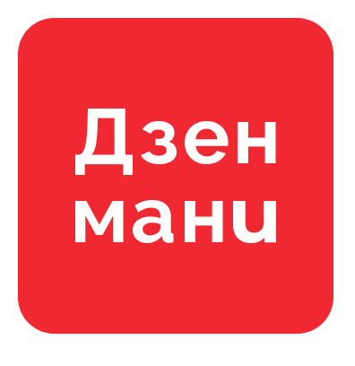
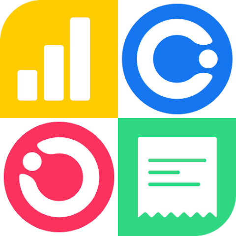

Broke is temporary. Smart habits are forever
For you
So, you’re thinking about studying abroad? Or maybe you’re just curious how your daily struggle for a cheap lunch compares to someone on the other side of the globe. We at Young & Broke decided to put two powerhouse capitals — Moscow and Beijing — head-to-head. Which city is kinder to your wallet?
Spoiler: both are expensive for students, but in very different ways.
Let’s break it down — rent, food, transport, and the fun stuff.
This is where your money disappears before you’ve even had breakfast.
Moscow is brutally expensive if you don’t get a dorm room. University dormitories range from 5,000 to 20,000 RUB per month depending on the university and room type. But if you’re unlucky and have to rent privately, brace yourself: a room in a shared flat costs 30,000–50,000 RUB on average. A one-bedroom apartment? Don’t even think about it — that’s easily 60,000 RUB and up.
Beijing is slightly more forgiving, but still tough. University dormitories cost around 800–1,500 CNY per month, which is very affordable. But off-campus, a shared apartment will set you back 2,000–4,000 CNY. That’s roughly the same ballpark as Moscow’s private rentals.
Verdict: Dorm life is the way to go in both cities. If you must rent privately, Beijing is slightly cheaper but neither city will be kind to you.
Here’s where Beijing pulls ahead significantly.
Moscow food prices have climbed steadily. A student canteen lunch costs around 300–600 RUB. Eating out at a mid-range restaurant? Prepare to spend 1,500–3,000 RUB per person. Monthly grocery shopping runs about 15,000–25,000 RUB if you cook at home. On average, Moscow students spend roughly 46% of their monthly budget on food alone.
Beijing is much more student-friendly. A canteen meal costs as little as 10–25 CNY, and even eating out at local spots is affordable — a decent dinner might cost 40–80 CNY. Monthly food costs range from 1,500–2,500 CNY for most students. According to Numbeo’s Cost of Living Index, Moscow scores 51.87 while Beijing sits much lower at 37.34 — meaning everyday expenses, especially food, are noticeably cheaper in Beijing.
Verdict: Beijing wins here, and it’s not particularly close. Moscow students pay more for both groceries and eating out.
Both cities have fantastic metro systems. Both offer student discounts.
Moscow metro is iconic (seriously, the stations look like museums). A single ride costs around 65 RUB in 2026, but a monthly student pass brings it down to about 1,500–2,500 RUB. Moscow students report spending roughly 19% of their budget on transport.
Beijing metro is even cheaper. A typical ride costs 3–6 CNY, and a monthly transport budget of 200–400 CNY is realistic for most students. A single metro ticket can be as low as 4 CNY (about 0.58 USD).
Verdict: Beijing metro is objectively cheaper, but both systems are excellent and reliable. Moscow loses points on price but wins on beauty.
This is where things get interesting. Moscow can actually be a bargain if you know where to look.
Moscow offers tons of free or heavily discounted activities for students. Many museums have free entry days for students, and cinemas offer up to 50% off with a student ID. However, when money gets tight, 30% of Moscow students say they cut back on entertainment first. A theater ticket might cost around 14 USD, and a Kremlin entry for two is about 12 USD.
Beijing entertainment is comparable in price. A ticket to the Forbidden City runs about 17 USD for two people, and the Summer Palace costs around 9 USD for two. Bars and nightlife? Beijing can get expensive fast — drinks out average more than in Moscow.
Verdict: Close call, but Moscow edges ahead for student-friendly cultural activities if you use your student ID wisely.
Note: 1 CNY ≈ 10.5 RUB approximate rate for 2026
Dormitory
5,000–20,000
800–1,500
8,400–15,750
Private Room (shared flat)
30,000–50,000
2,000–4,000
21,000–42,000
Food (monthly)
15,000–25,000
1,500–2,500
15,750–26,250
Transport (monthly)
1,500–2,500
200–400
2,100–4,200
Leisure & Misc
8,000–15,000
1,000–1,500
10,500–15,750
Total (dorm option)
~30,000–62,000
~3,500–5,900
~36,750–61,950
Total (private rent)
~54,500–92,500
~4,700–8,400
~49,350–88,200
Sources: Moscow data from XDF Russia study cost report 2026, student surveys, and Numbeo; Beijing data from Study-Abroad.org 2026 cost guide and Budget Your Trip.
Here’s the truth: Beijing offers slightly better value for students, especially on food and day-to-day living. Numbeo’s 2026 data confirms this — Beijing’s Cost of Living Index (37.34) is significantly lower than Moscow’s (51.87). However, Moscow can be surprisingly manageable if you secure a dormitory spot and master the art of student discounts.
Both cities will drain your savings if you rent privately. Both can be reasonably affordable if you stay in dorms and eat at university canteens.
Our advice? Wherever you study, learn to cook basic meals and apply for that dorm early. Your future self will thank you.
Are you a student in Moscow or Beijing? We want to hear your real numbers! Drop a comment on our VK or Telegram — how much do you actually spend per month? Your story might end up in our next article.
Stay broke. Stay smart. — Young & Broke Team
Let's be honest — university life in Russia is expensive. Between rent, groceries, transport, and the occasional night out, tracking where your money disappears can feel like a part-time job. The good news? Your phone can actually help.
We searched for budgeting apps that work smoothly in Russia right now, are student-friendly (read: free or cheap), and don't require a foreign bank account. Here are our top three picks for 2026.
Best for: Students who value speed, privacy, and simplicity.
Why we picked it:
Not everyone wants an app digging through their bank statements. Monefy takes a refreshingly low-tech approach: you manually log every expense by tapping a colorful icon — food, transport, entertainment, whatever. The whole process takes about three seconds and works perfectly with Russian cards.
The home screen is a clean pie chart showing exactly where your money went. There are no menus buried inside menus, no AI assistant asking how you feel about your spending — just raw numbers, clearly displayed. Hi-Tech Mail recently included Monefy in their top finance apps ranking, praising its minimalistic interface and fast widget-based entry .
What makes Monefy particularly great for Russian students: it supports multiple currencies and has a full Russian-language interface — useful if you're comparing costs between Moscow and Beijing or just prefer tracking finances in your native language .
Pricing: The base app is free. A one-time purchase unlocks unlimited categories — no monthly subscription draining your scholarship. For students tired of yet another recurring charge, that's gold.
The catch? Manual entry requires discipline. If you forget to log that shawarma after classes, those rubles vanish from your budget forever.
Available on: iOS, Android

Best for: Students who want everything automated and hate manual input.
Why we picked it:
Zen-Money is the undisputed leader for personal finance in Russia. The app automatically syncs transactions from over 50 Russian banks and payment systems, including Sber, T-Bank, Alfa-Bank, VTB, and YuMoney . Instead of typing every expense by hand, you just watch as the app categorizes your transactions intelligently — coffee shop visits go to "Food," metro rides to "Transport," and so on.
The killer feature in 2026 is the AI-powered spending forecast: the app predicts overspending before it happens and suggests adjustments to your financial plan . For students living on a fixed scholarship amount, that's incredibly useful.
Zen-Money also handles family budget sharing, financial goal setting, and debt tracking. It generates clean reports — daily, weekly, by category — that make your spending patterns painfully obvious (in a good way).
Pricing: The basic version is free and covers the core functionality most students need. Premium features require a subscription, but start with the free tier and upgrade only if you need advanced reports .
The catch? Occasional syncing delays after banks update their APIs — not the app's fault, but it can be annoying. Also, you need to trust the app with access to your bank data, which isn't for everyone.
Available on: iOS, Android, Web

Best for: Students who find budgeting boring and need motivation.
Why we picked it:
CoinKeeper turns money management into something that actually feels rewarding. Instead of dull spreadsheets, you get colorful circular diagrams and bright icons representing each spending category . Setting limits gives you a clear visual: the icon "drains" as you spend, and turns red when you're over budget — immediate, guilt-inducing feedback that actually works.
The app automatically imports bank statements (supporting major Russian banks), helps you manage subscriptions and recurring payments, and offers a family budget mode with different roles — useful if you're sharing expenses with a roommate or partner .
For students, CoinKeeper's strength is making budget tracking feel less like homework. The gamification element keeps you engaged long after the initial "I should save money" motivation fades.
Pricing: Free basic version available. Premium tiers unlock unlimited categories, extended statistics, and advanced spending limits .
The catch? The playful design isn't for everyone — some users prefer a more "serious" financial look. Also, advanced features sit behind a paywall, which might sting on a tight budget.
Available on: iOS, Android
Works in Russia
Yes, Russian language
Yes, 50+ Russian banks
Yes, Russian banks
Bank sync (auto-import)
No (manual only)
Yes
Yes
Cost for students
Free (one-time purchase for pro)
Free basic tier
Free basic tier
Russian language interface
Yes
Yes
Yes
Best for
Privacy & speed
Full automation
Motivation & habits
Download Monefy if you're privacy-conscious or want something that works in five seconds flat. No bank access needed, and the one-time payment model is perfect for students.
Download Zen-Money if you want the most powerful, Russia-focused auto-tracker. The AI forecasting and wide bank support make it genuinely useful for long-term financial awareness.
Download CoinKeeper if you've tried budgeting before and got bored. The gamification might just keep you hooked long enough to build real habits.
Or honestly? Try all three — Monefy, Zen-Money, and CoinKeeper all offer free versions. Spend a few days with each and see which interface you actually open without being reminded. The best money app is the one you'll use every day .
We shared our picks. Now we want yours! Drop a comment on our VK or Telegram — what money app do you actually use in Russia? Any hidden gems we missed? Your recommendation might appear in a follow-up article.
Stay broke. Stay smart. — Young & Broke Team
Lolita: Hello everyone! Today we want to discuss an interesting question: Is it awkward to talk about money? We are students of the Faculty of Foreign Languages at MPGU, and money is something that affects students a lot — from daily expenses to future career plans. I’m Lolita.
Veronika: And I’m Veronika. Today we are interviewing our classmate Vera to hear her opinion on this topic.
Vera: Hello! I’m happy to be here and share my thoughts.
Lolita: So, Vera, let’s start with a simple question: Do you think talking about money is awkward?
Vera: I think it depends on the situation. In some cases, talking about money is completely normal — for example, discussing prices, budgeting, or salary expectations. But in personal conversations, especially about how much someone earns or spends, it can feel uncomfortable.
Veronika: Why do you think people feel uncomfortable?
Vera: Probably because money is connected with personal success, social status, and sometimes even self-esteem. People may be afraid of judgment — either because they have too little money or because they have more than others.
Lolita: As students, we often have limited budgets. Do students talk openly about money?
Vera: Actually, yes — but mostly in a casual way. For example, we discuss food prices, transportation, discounts, or how expensive textbooks are. Sometimes we talk about part-time jobs too.
Veronika: Do you think students compare themselves financially?
Vera: Sometimes. For example, when one student can travel often, buy expensive clothes, or go out regularly, others may compare their own situation. But usually people don’t speak about it directly.
Lolita: Do you personally find it easy to discuss money with friends?
Vera: With close friends — yes. I can talk about saving money, spending habits, or financial worries. But with people I don’t know well, I prefer not to discuss personal finances.
Veronika: What about family? Is it easier to talk about money with family members?
Vera: Usually yes, because family often discusses practical things — bills, shopping, education, and future plans. But even in families, money can become a sensitive topic if there are financial problems.
Lolita: Do you think culture influences how people talk about money?
Vera: Definitely. In some cultures, discussing salary and finances openly is normal. In others, it’s considered rude or too personal. I think in Russia people are often careful about these conversations.
Veronika: As students of foreign languages, we will soon start our professional careers. Do you think it’s important to talk openly about salary?
Vera: Yes, I do. Salary discussions are important because they help people understand their value in the job market. If no one talks about money, it’s easier for employers to underpay workers.
Lolita: Would you feel comfortable negotiating your salary in the future?
Vera: At first, maybe I’d feel nervous. But I understand that it’s a professional conversation, not something embarrassing. I think it’s an important skill to learn.
Veronika: That’s a very interesting point. Maybe money feels awkward to discuss only because society teaches us to treat it as a taboo subject.
Lolita: Yes, and open conversations about money can actually help people make better decisions and feel less stressed.
Vera: I agree. Talking about money respectfully and honestly can be useful, not awkward.
Lolita: Thank you, Vera, for sharing your opinion.
Veronika: And thank you for listening!
All together: Goodbye!